SpringMVC
4.Spring返回模型数据和结果视图
处理模型数据方式一：将方法的返回值设置为
ModelAndView处理模型数据方式二：方法的返回值仍是
String类型，在方法的入参中传入MapModel或者ModelMap不管将处理器方法的返回值设置为
ModelAndView还是在方法的入参中传入MapModel或者ModelMap，SpringMVC都会转换为一个ModelAndView对象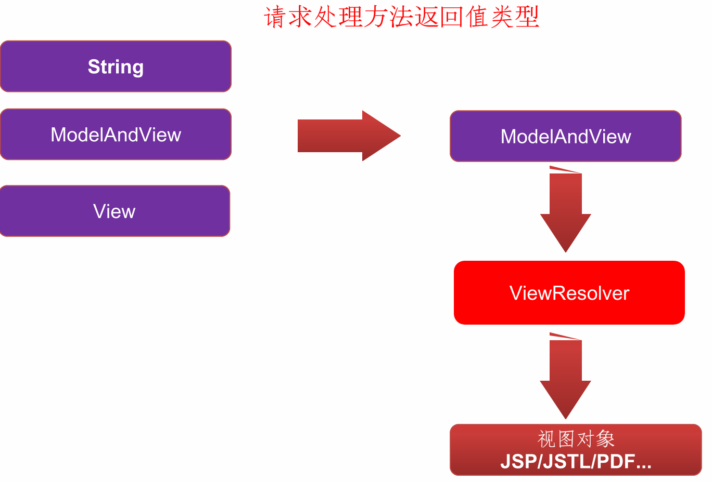
4.1.返回字符串类型
4.1.1.直接返回目标jsp文件名
controller方法返回字符串可以指定逻辑视图名，通过视图解析器解析为物理视图地址index.jsp1
<a href="yyx/hello">返回字符串</a>
Controlller.java1
2
3
4
5(path = "/hello")
public String sayHello(Model model){
model.addAttribute("returnfunction","string");
return "success";
}success.jsp1
2
3
4<h3>入门成功</h3>
sessionScope.return: ${sessionScope.returnfunction}<br>
requestScope.return: ${requestScope.returnfunction}<br>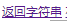
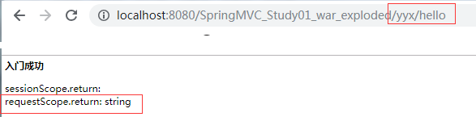
4.1.2.返回使用forward转发
- 相当于
Request.getRequestDispatcher ("url").forward (request, response) - 使用请求转发，既可以转发到
jsp,也可以转发到其他的控制器方法
1 | (path = "/hello") |
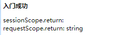
4.1.3.返回使用Redirect重定向
contrller方法提供了一个String类型返回值之后，需要在返回值里使用:redirect:- 相当于
Response.sendRedirect(url) - 重定向到
jsp页面，则jsp页面不能写在WEB-INF目录中，否则无法找到
1 | (path = "/hello") |
4.2.返回void类型
- 将上例中方法返回值修改为
void
1 | (path = "/hello") |
- 执行程序报
404的异常，默认查找页面没有找到。
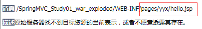
- 会有默认请求路径：
方法路径.jsp——请求转发或者重定向跳转到指定的页面 - 如果就想返回void，见下
4.2.1.方法一：Request使用请求转发
- 请求转发是一次请求 不用编写项目名称 但不会调用视图解析器 必须带
.jsp
1 | (path = "/hello") |
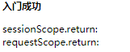
4.2.2.方法二：Response页面重定向
- 重定向是两次请求 要编写项目名称 WEB-INF目录下文件无法访问
1 | (path = "/hello") |
4.2.3.方法三：输出流直接响应
1 | (path = "/hello") |
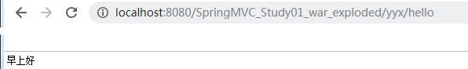
4.3.返回ModelAndView类型【常用】
ModelAndView是SpringMVC为我们提供的一个对象，其既包含视图信息，也包含模型数据信息SpringMVC会把ModelAndView的model中数据放入到request域对象中- 添加模型数据：
MoelAndView addObject(String attributeName, Object attributeValue) - 设置视图：
void setViewName(String viewName)
1 | (path = "/hello") |
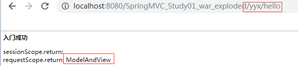
4.4.返回@ResponseBody的json数据
4.4.1.防止静态资源被拦截
DispatcherServlet会拦截到所有的资源，导致静态资源（images、css，js） 会被拦截到，当成一个普通请求处理，因找不到对应处理器将导致错误，从而不能被使用。解决问题就是需要配置静态资源不进行拦截，在
springmvc.xml配置文件添加如下配置springmvc.xml
1
2
3<mvc:resources mapping="/js/**" location="/js/"/>
<mvc:resources mapping="/css/**" location="/css/"/>
<mvc:resources mapping="/images/**" location="/images/"/>在SpringMVC上下文中定义一个
DefaultServletHttpRequestHandler,它会对进入DispatcherServlet的请求进行筛查，如果发现是没有经过映射的请求，就将该请求交由WEB应用服务器默认的Servlet处理，如果不是静态资源的请求，才由DispatcherServlet继续处理一般WEB应用服务器默认的Servlet的名称都是default。若所使用的
WEB服务器的默认Servlet名称不是default，则需要通过default-servlet-name属性显式指定
1
<mvc:default-servlet-handler/>
index.jsp
1
2
3
4
5
6
7
8
9
10
11
12
13
14
15
16
17
18
19
20
21
22
23<%@ page contentType="text/html;charset=UTF-8" language="java" isELIgnored="false" %>
<html>
<head>
<title>Title</title>
<script src="js/jquery.min.js"></script>
<script>
$(function () {
$("#btn").click(function x() {
# 此时此处的按键将会有响应
alert("hello btn");
})
})
</script>
</head>
<body>
<h3>入门程序</h3>
<br/>
<button id="btn">发送ajax请求</button>
<br/>
</body>
</html>
4.4.2.使用json请求
使用
@RequestBody注解把json的字符串转换成JavaBean的对象导包
1 | <dependency> |
index.jsp
1 | <%@ page contentType="text/html;charset=UTF-8" language="java" isELIgnored="false" %> |
1 | (path = "/hello") |
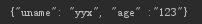
4.4.3.使用@ResponseBody响应json
1 | (path = "/hello") |
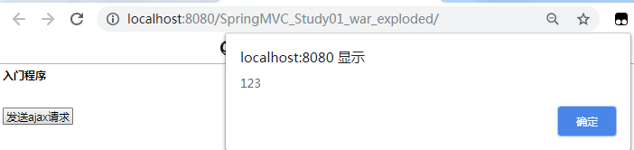
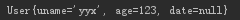
4.4.4.原理
HttpMessageConverter<T>是 Spring3.0 新添加的一个接口，负责将请求信息转换为一个对象（类型为 T）或将对象（ 类型为 T）输出为响应信息- 使用
@RequestBody / @ResponseBody对处理方法进行标注 - 使用
HttpEntity<T> / ResponseEntity<T>作为处理方法的入参或返回值
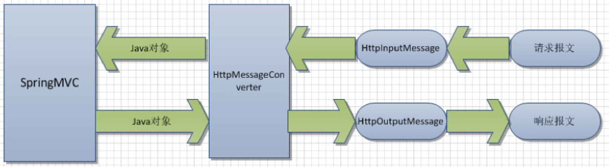
- 使用
HttpMessageConverter<T>接口实现类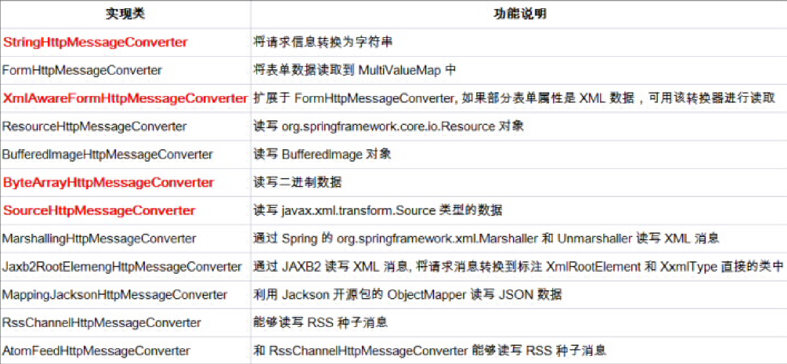
DispatcherServlet默认装配RequestMappingHandlerAdapter，而RequestMappingHandlerAdapter默认装配如下HttpMessageConverter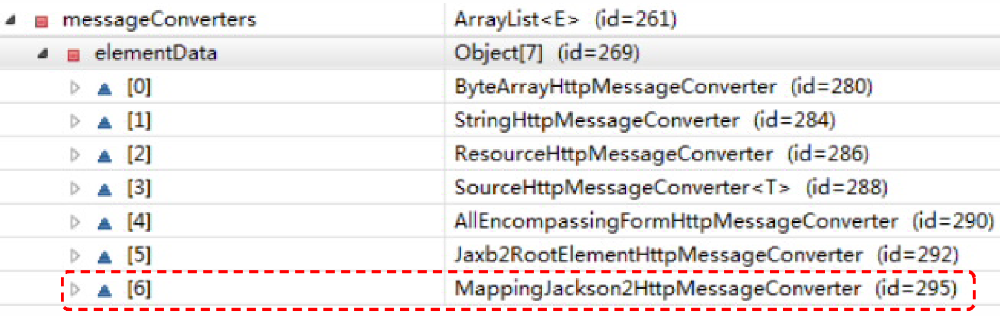
加入 jackson jar 包后 新增[6]
原理
- Spring 首先根据请求头或响应头的 Accept 属性选择匹配的
HttpMessageConverter, - 进而根据参数类型或泛型类型的过滤得到匹配的
HttpMessageConverter, 若找不到可用的HttpMessageConverter将报错
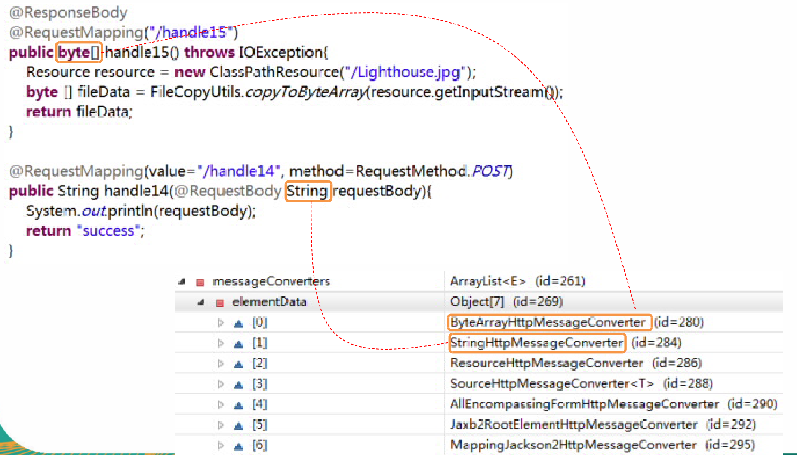
- Spring 首先根据请求头或响应头的 Accept 属性选择匹配的
自定义视图
常用的视图解析器实现类
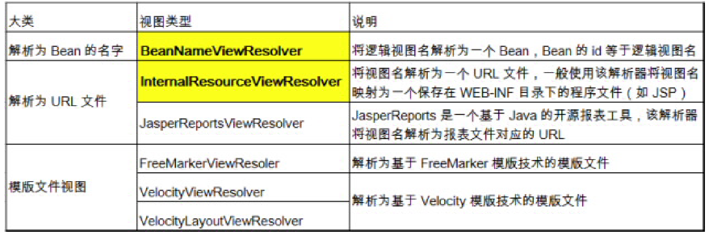
自定义过程
编写自定时视图类并实现View接口
将
@Component标致在只定义类上使用
BeanNameViewResolver作为视图解析器1
2
3
4
5<!--配置视图BeanNameViewResolver 解析器:使用视图的名字来解析视图-->
<!--通过order属性来定义视图解析器的优先级，order值越小优先级越高-->
<bean class= "org. springframework.web.servlet.view.BeanNameViewResolver">
<property name= "order" value= "100"></ property>
</bean>
原文作者: 掘金木匠
原文链接: http://goldcarpenter.github.io/2019/11/19/SpringMVC_Part3/
版权声明: 转载请注明出处(必须保留作者署名及链接)